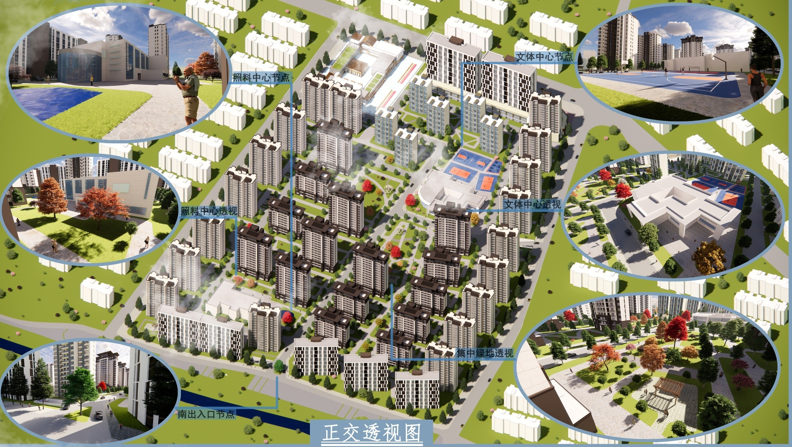
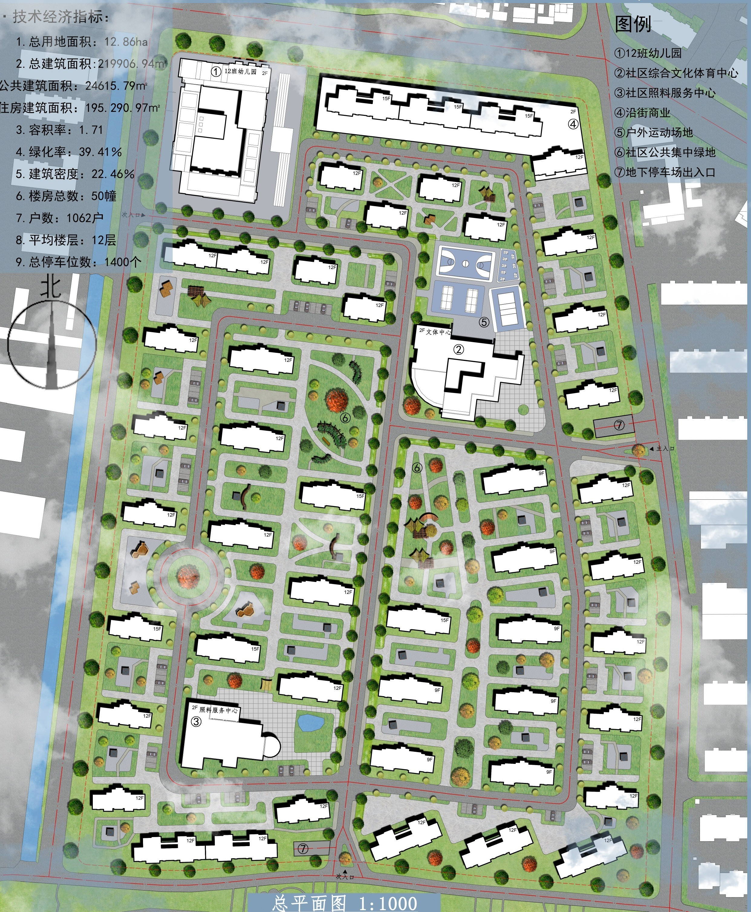
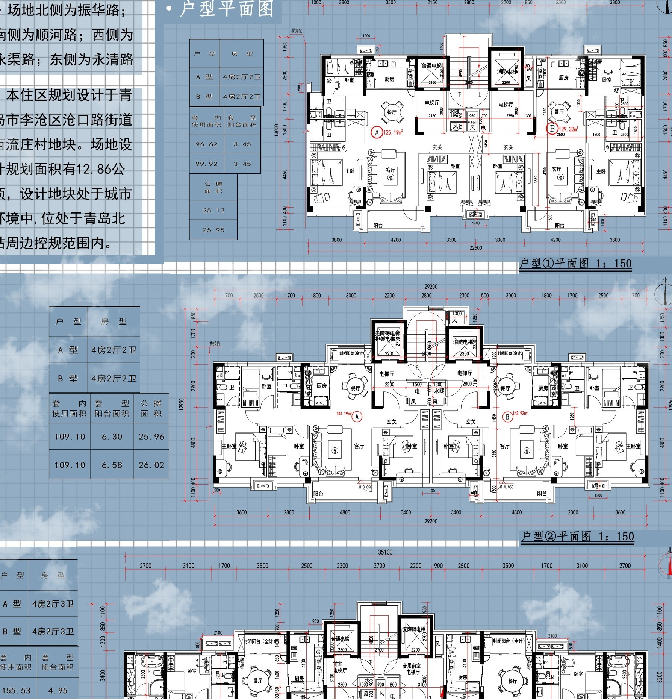
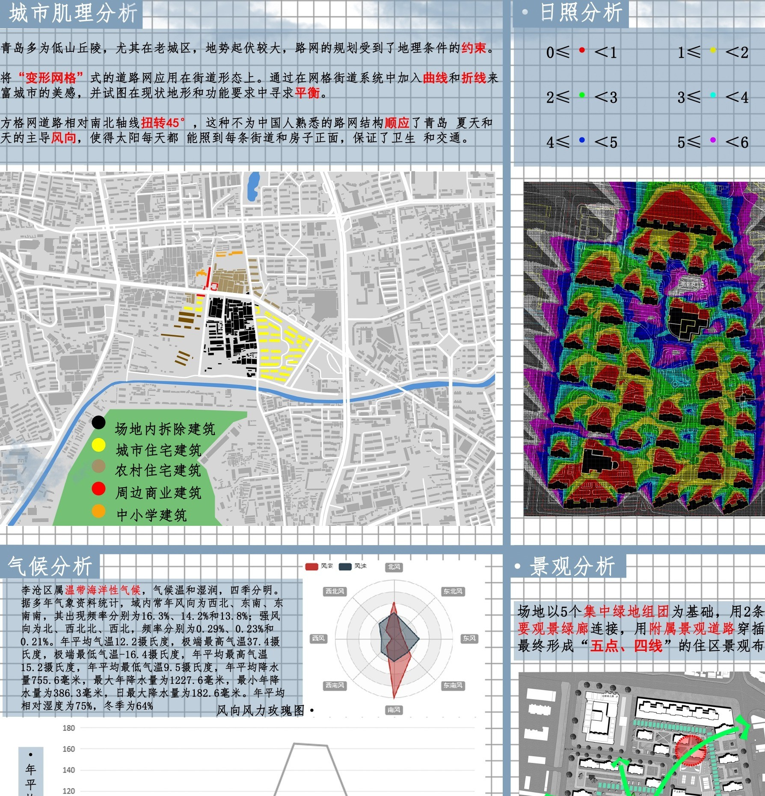

共享服务元
幼儿园、文体中心、社区照料、商业与运动场沿主要步行路径布置，构成可达、可见、可共享的服务网络。
基地位于青岛市李沧区沧口街道，北接振华路、东邻永清路、南向大村河。设计在改善住房的同时补齐教育、养老、文化、运动、商业与开放空间。

共享服务、绿色生活与多元居住不是彼此分离的图层，而是通过日常步行路径、公共节点和住宅组团相互嵌合。
幼儿园、文体中心、社区照料、商业与运动场沿主要步行路径布置，构成可达、可见、可共享的服务网络。
集中绿心、宅间花园与滨河方向形成连续开放空间，让运动、游戏、休憩与邻里交往进入社区日常。
多种层数、围合方式和户型面积回应原居民、青年家庭、多代共居与改善型需求。
集中绿心是总体结构核心，次级绿地进入各住宅组团；公共服务布置在主要到达与共享节点，外围车行与内部慢行分层组织。

位于北侧相对独立地块，便于接送并减少穿越社区内部。
与室外运动场相邻，形成社区主要公共活动节点。
联系安静的宅间绿地，为老年居民提供近距离支持。
停车下沉，车辆沿外围组织，释放中心步行与开放空间。
公共空间从中心绿心向宅间花园、入口广场和沿街界面逐级展开。景观不仅用于观看，也承载运动、儿童游戏、文化活动与邻里交往。
户型以南向采光、自然通风、合理交通核和家庭共享空间为基础，适应安置、成长、多代共居和改善需求。

不同面积段与建筑组团共同形成层次丰富的社区居住选择，避免单一高层行列式布局带来的空间同质化。
日照、气候、景观、结构与竖向分析共同检验建筑布局、绿地连接、公共空间采光和全龄步行的基本合理性。

冬季日照分析校核住宅间距与公共空间采光。
青岛季风与降水特征指导朝向、通风、排水和绿地渗透。
集中绿地通过主轴与支线连续进入各住宅组团。
顺应北高南低约 4.77 m 高差，组织排水与无障碍到达。
点击任意展板可在新窗口查看高清图。展板依次呈现现状、总体规划、竖向与户型、立面及环境分析。
完整收录项目概况、场地研究、设计理念、总体规划、全龄服务、公共空间、竖向设计、住宅户型、城市立面与环境分析。